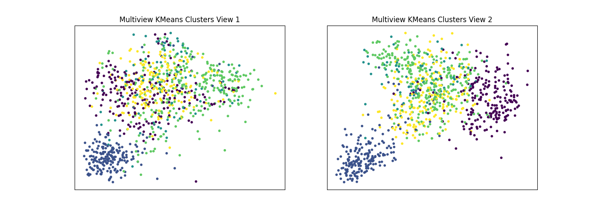
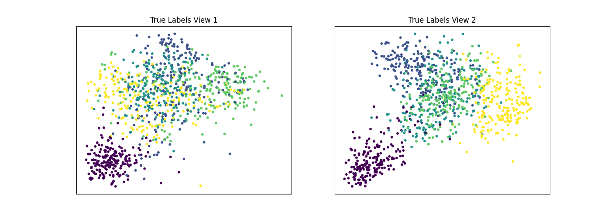

Note
Click here to download the full example code
Multiview KMeans Tutorial¶
In this tutorial we demonstrate how to use multiview k-means clustering in mvlearn by clustering a 5-class dataset from the UCI multiview digits dataset.
# License: MIT
from mvlearn.datasets import load_UCImultifeature
from mvlearn.cluster import MultiviewKMeans
from sklearn.cluster import KMeans
import numpy as np
from sklearn.manifold import TSNE
from sklearn.metrics import normalized_mutual_info_score as nmi_score
import matplotlib.pyplot as plt
import warnings
warnings.filterwarnings("ignore")
# Load in UCI digits multiple feature data
RANDOM_SEED = 5
# Load dataset along with labels for digits 0 through 4
n_class = 5
Xs, labels = load_UCImultifeature(
select_labeled=list(range(n_class)), views=[0, 1])
# Helper function to display data and the results of clustering
def display_plots(pre_title, data, labels):
# plot the views
fig, ax = plt.subplots(1, 2, figsize=(14, 5))
dot_size = 10
ax[0].scatter(data[0][:, 0], data[0][:, 1], c=labels, s=dot_size)
ax[0].set_title(pre_title + ' View 1')
ax[0].axes.get_xaxis().set_visible(False)
ax[0].axes.get_yaxis().set_visible(False)
ax[1].scatter(data[1][:, 0], data[1][:, 1], c=labels, s=dot_size)
ax[1].set_title(pre_title + ' View 2')
ax[1].axes.get_xaxis().set_visible(False)
ax[1].axes.get_yaxis().set_visible(False)
plt.show()
Singleview and multiview clustering of the data with 2 views¶
Here we will compare the performance of the Multiview and Singleview versions of kmeans clustering. We will evaluate the purity of the resulting clusters from each algorithm with respect to the class labels using the normalized mutual information metric. <br>
As we can see, Multiview clustering produces clusters with higher purity compared to those produced by clustering on just a single view or by clustering the two views concatenated together.
# Singleview kmeans clustering
# Cluster each view separately
s_kmeans = KMeans(n_clusters=n_class, random_state=RANDOM_SEED)
s_clusters_v1 = s_kmeans.fit_predict(Xs[0])
s_clusters_v2 = s_kmeans.fit_predict(Xs[1])
# Concatenate the multiple views into a single view
s_data = np.hstack(Xs)
s_clusters = s_kmeans.fit_predict(s_data)
# Compute nmi between true class labels and singleview cluster labels
s_nmi_v1 = nmi_score(labels, s_clusters_v1)
s_nmi_v2 = nmi_score(labels, s_clusters_v2)
s_nmi = nmi_score(labels, s_clusters)
print('Singleview View 1 NMI Score: {0:.3f}\n'.format(s_nmi_v1))
print('Singleview View 2 NMI Score: {0:.3f}\n'.format(s_nmi_v2))
print('Singleview Concatenated NMI Score: {0:.3f}\n'.format(s_nmi))
# Multiview kmeans clustering
# Use the MultiviewKMeans instance to cluster the data
m_kmeans = MultiviewKMeans(n_clusters=n_class, random_state=RANDOM_SEED)
m_clusters = m_kmeans.fit_predict(Xs)
# Compute nmi between true class labels and multiview cluster labels
m_nmi = nmi_score(labels, m_clusters)
print('Multiview NMI Score: {0:.3f}\n'.format(m_nmi))
Out:
Singleview View 1 NMI Score: 0.635
Singleview View 2 NMI Score: 0.746
Singleview Concatenated NMI Score: 0.746
Multiview NMI Score: 0.693
Comparing predicted cluster labels vs the truth¶
We will display the clustering results of the Multiview kmeans clustering algorithm below, along with the true class labels.
# Running TSNE to display clustering results via low dimensional embedding
tsne = TSNE()
new_data_1 = tsne.fit_transform(Xs[0])
new_data_2 = tsne.fit_transform(Xs[1])
display_plots('Multiview KMeans Clusters', Xs, m_clusters)
display_plots('True Labels', Xs, labels)
- 
- 
Total running time of the script: ( 0 minutes 5.450 seconds)